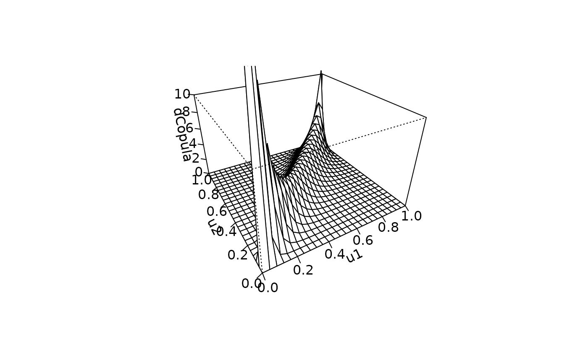
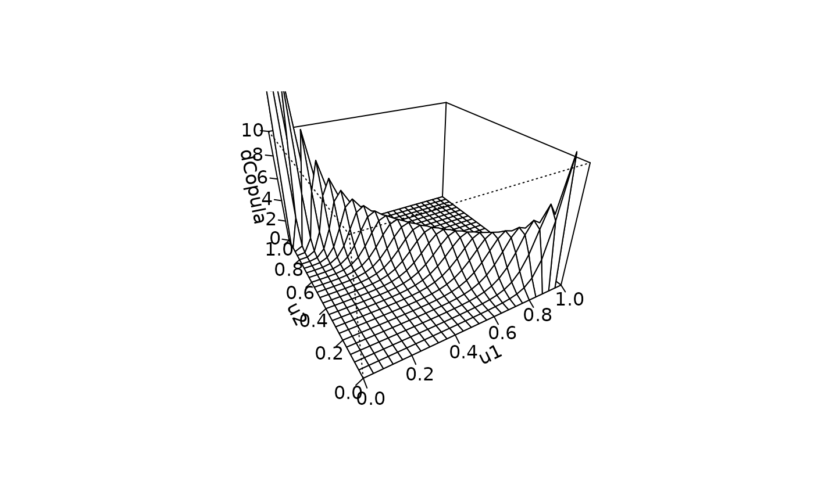
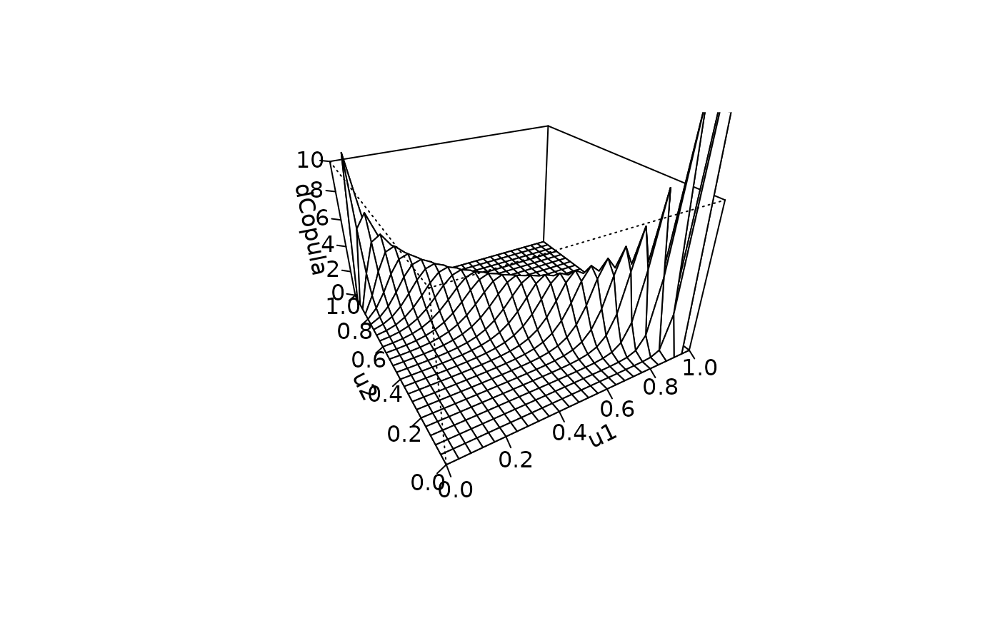

A class representing rotated versions of the Gumbel copula family (survival, 90 and 270 degree rotated).
Objects can be created by calls of the form
new("surGumbelCopula", ...), new("r90GumbelCopula", ...) and
new("r270GumbelCopula", ...) or by the function
surGumbelCopula(), r90GumbelCopula() and
r270GumbelCopula() respectively.
VineCopula::VineCopula-package
library(copula)
persp(surGumbelCopula(5), dCopula, zlim = c(0, 10))
#> Warning: surface extends beyond the box

persp(r90GumbelCopula(-5), dCopula, zlim = c(0, 10))
#> Warning: surface extends beyond the box

persp(r270GumbelCopula(-5), dCopula, zlim = c(0, 10))
#> Warning: surface extends beyond the box
